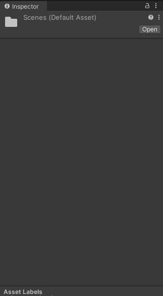
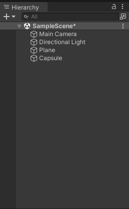
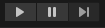
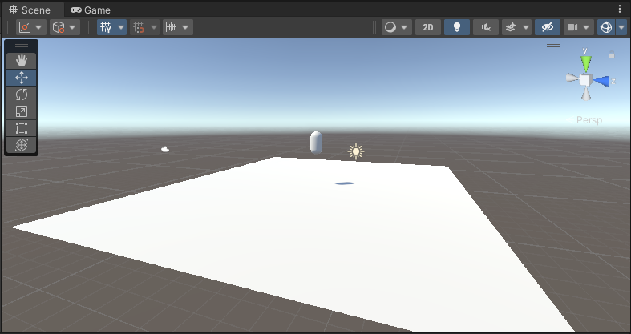
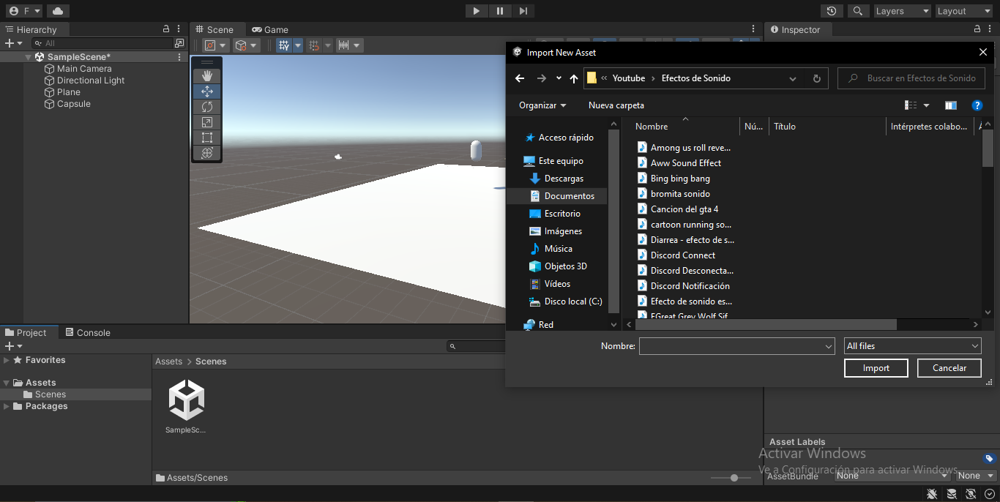
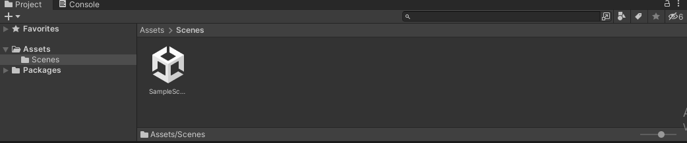
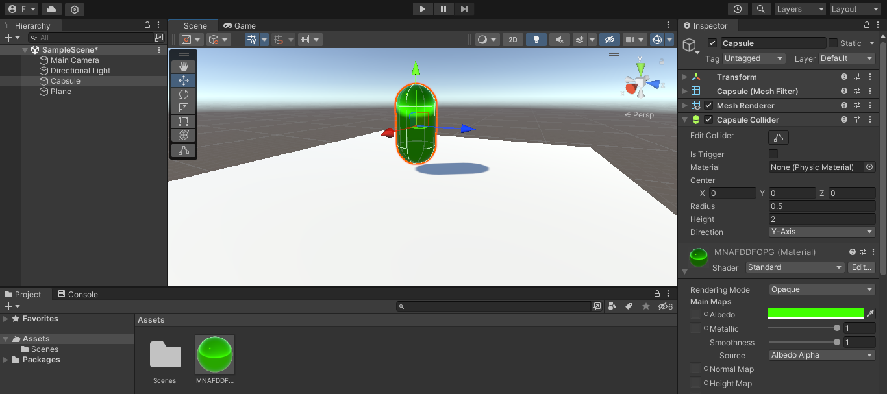
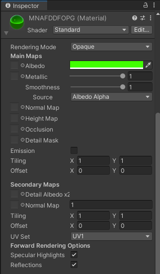

Unity es una plataforma de desarrollo de videojuegos que permite a los desarrolladores crear juegos para múltiples plataformas, incluyendo PC, consolas, dispositivos móviles y realidad virtual. Unity ofrece herramientas para la creación de gráficos, física, animaciones, sonido, IA y otros aspectos necesarios para el desarrollo de videojuegos. Además, cuenta con una comunidad de desarrolladores y un activo ecosistema de complementos y recursos para ayudar a los desarrolladores a crear juegos de alta calidad de manera más eficiente.
Las herramientas de Unity nos permiten crear juegos y aplicaciones interactivas de manera más eficiente y efectiva. Unity es una herramienta poderosa y versátil que incluye una gran cantidad de herramientas y características, vistas a continuacion:






Con estas herramientas, podemos crear y personalizar entornos, personajes, animaciones y otros aspectos importantes de un juego o aplicación, lo que nos permite crear experiencias interactivas únicas y atractivas para los usuarios.
HERRAMIENTAS GENERALES UNITY
- Editor de Escenas: Esta herramienta nos permite crear y modificar entornos 3D y 2D. Con el Editor de Escenas, podemos importar y ajustar modelos 3D y agregar texturas, iluminación, efectos y más. Además, podemos organizar objetos en jerarquías para facilitar la navegación y la edición.
- Editor de Animaciones: Con el Editor de Animaciones de Unity, podemos crear y editar animaciones para personajes y objetos. Podemos utilizar keyframes para definir los movimientos de los personajes y objetos, ajustar la interpolación para lograr movimientos suaves y naturales, mezclar varias animaciones para crear transiciones fluidas entre ellas, y más.
- Sistema de Física: El sistema de física de Unity permite simular la física en el juego, incluyendo la gravedad, la colisión, la fricción y más. Podemos agregar colisionadores a objetos y ajustar sus propiedades, así como utilizar el motor de física de Unity para simular el movimiento y la interacción entre objetos.
- Control de Audio: Con el Control de Audio de Unity, podemos controlar el sonido y la música en el juego. Podemos crear y mezclar pistas de audio, agregar efectos de sonido, ajustar la reverberación y más.
- Lenguaje de Programación: Unity utiliza C# como lenguaje de programación principal para escribir scripts y programar la lógica del juego. Con C#, podemos crear funciones y métodos para controlar el comportamiento de los objetos y personajes en el juego, así como interactuar con otras herramientas y características de Unity.
- Asset Store: La Asset Store de Unity nos permite acceder a una amplia variedad de recursos adicionales, incluyendo modelos 3D, texturas, scripts y más. Podemos comprar o descargar de forma gratuita recursos de alta calidad creados por la comunidad de Unity o por desarrolladores externos.
- Animaciones Mecánicas: Esta herramienta nos permite crear animaciones de movimiento para personajes y objetos utilizando un sistema basado en estados. Podemos definir animaciones para diferentes estados, como caminar, correr, saltar y más, y crear transiciones suaves entre ellos.
- Partículas: La herramienta de partículas de Unity nos permite crear efectos visuales complejos, como fuego, humo, agua y más, utilizando partículas animadas. Podemos ajustar la velocidad, la dirección, la vida útil y otros parámetros de las partículas para lograr el efecto deseado.
- Cinemachine: Cinemachine es una herramienta que nos permite crear cámaras complejas y cinematográficas para nuestros juegos y aplicaciones. Podemos definir trayectorias de cámara, ajustar la posición y rotación de la cámara en tiempo real y más.
- NavMesh: La herramienta NavMesh de Unity nos permite definir áreas de navegación para personajes y objetos en el juego. Podemos crear áreas de obstáculos y áreas de navegación, así como ajustar la velocidad y la dirección de los personajes y objetos que navegan por el escenario.
VENTANAS Y HERRAMIENTAS DE INTERFAZ PRINCIPAL
- Vista de la Escena: es la ventana central en la que se visualiza y edita la escena del juego en 3D o 2D. Se pueden añadir, mover y editar objetos y elementos del juego en esta vista.
- Panel de Jerarquía: se encuentra en la parte superior izquierda de la interfaz y muestra la estructura de los objetos de la escena. Se pueden añadir, mover y modificar objetos desde este panel.
- Panel de Proyectos: se encuentra en la parte inferior izquierda de la interfaz y se utiliza para importar y gestionar los recursos del juego como modelos 3D, texturas, sonidos, etc.
- Panel de Inspección: se encuentra en la parte inferior derecha de la interfaz y muestra las propiedades de los objetos seleccionados en la escena o en la jerarquía. Desde este panel se pueden modificar las propiedades de los objetos.
- Panel de Animación: se utiliza para crear y editar animaciones para los objetos del juego. Este panel se puede abrir desde la pestaña de ventana en la parte superior de la interfaz.
- Panel de Navegación: se utiliza para navegar por la escena del juego y moverse por el entorno en 3D. Este panel se puede abrir desde la pestaña de ventana en la parte superior de la interfaz.
- Panel de Consola: se utiliza para ver los mensajes y errores que Unity muestra en tiempo de ejecución. Este panel se puede abrir desde la pestaña de ventana en la parte superior de la interfaz.
- Panel de Layers: se utiliza para definir los diferentes layers o capas en las que se pueden agrupar los objetos en la escena. Desde este panel se pueden asignar diferentes comportamientos a cada capa.
- Panel de Assets: es una ventana adicional que se puede abrir desde la pestaña de ventana en la parte superior de la interfaz. Desde este panel se pueden arrastrar y soltar recursos y elementos a la escena y a otros paneles.
MATERIALES UNITY
En Unity, los materiales son herramientas que permiten modificar la apariencia de los objetos en la escena en 3D. Por ejemplo, se pueden aplicar texturas e imágenes para simular diferentes materiales como madera, metal, piedra, entre otros.
Los materiales también permiten ajustar el color y la transparencia de los objetos, así como controlar la cantidad de luz que reflejan para crear superficies como el agua o el metal. Además, se pueden definir propiedades físicas como la rugosidad y el brillo de la superficie.
En Unity, se pueden crear y editar materiales en la ventana de "Inspector" seleccionando un objeto y añadiendo un componente "Material". Luego, se pueden ajustar las propiedades del material y asignar las texturas necesarias para lograr el aspecto deseado. También es posible crear materiales mediante programación para crear efectos más avanzados.


Una vez tengamos nuestro material lo podremos usar en nuestras figuras, las figuras que podemos hacer van desde figuras geometricas tridimensionales hasta capsulas y planicies.